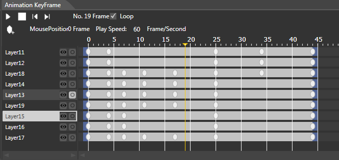
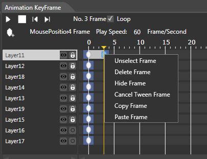
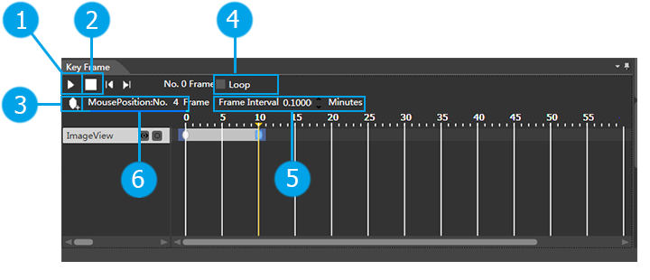

Rendering Panel
Introduction

Animation frame area diplayed the information of all the frames current animation.
Function
Frame Operation

Add Frame
1. As right picture shown: hold on right mouse adding keyframe, then a gray oval will be created in the mouse's position as a mark of keyframe.
2. Also you can add keyframe by keyframe button on the left top.
Delete Frame
As picture shown above: Use right button of mouse delete frame will delete the keyframe selected currently, that is deleted the gray oval current selected.
Move Frame
Selected the keyframe's gary oval mark and use mouse to drag it to wherever you want.
Play Animation

 Play Animation: Click it then play the selected animation. Play Animation: Click it then play the selected animation. |
 Stop Animation: Stop the animation, which is playing. Stop Animation: Stop the animation, which is playing. |
 Add keyframe: Select the position by mouse where you want to add keyframe, click it will add a keyframe. Add keyframe: Select the position by mouse where you want to add keyframe, click it will add a keyframe. |
 Looping Animation: Check the option then loop playing animation. Looping Animation: Check the option then loop playing animation. |
 Frame playing interval: Interval time can be set to control the speed of the animation runs. Frame playing interval: Interval time can be set to control the speed of the animation runs. |
 Mouse's position: Display mouse's position to help user to accurately add a keyframe. Mouse's position: Display mouse's position to help user to accurately add a keyframe. |
Content Menu
| Add Frame | Add a frame at current position for all the selected layers. | Have selected animation and selected layer. | |
| Delete Frame | Delete all the selected keyframes. | Have selected keyframe. | |
| Hide Frame | Hide all the selected keyframes. | Have selected keyframe. | |
| Display Frame | Display all the selected and hided keyframes. | Have selected and hided keyframes. | |
| Copy Frame | Copy all the selected keyframes. | Have selected keyframe. | |
| Paste Frame | Paste all the copied frames. | Have copied keyframe. | |
| Select Frame | Select current clicked keyframe. | Click the keyframe, which are not selected. | |
| Cancel Selected | Cancel the keyframe current selected. | Click to select keyframe. |
Copyright © 2013 CocoStudio.org. All Rights Reserved. Version 1.0.0